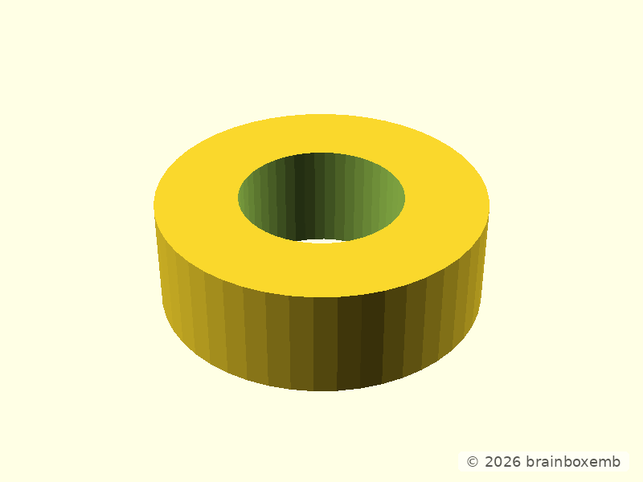
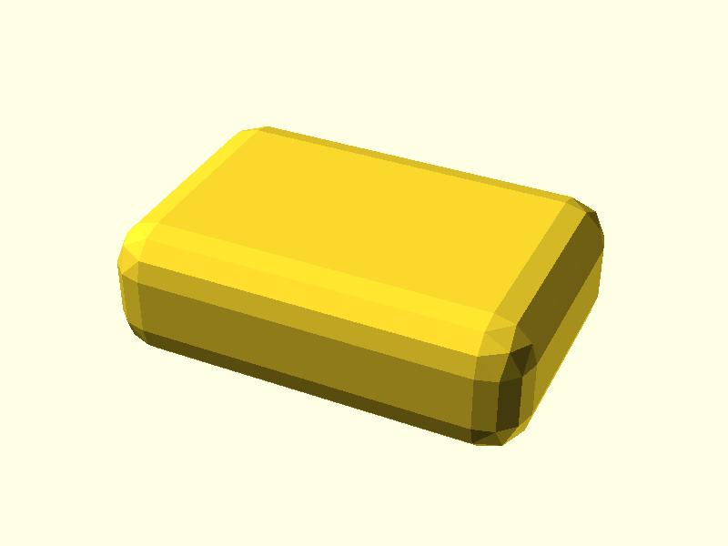

One external suite validates two related runtime profiles. Shared OpenSCAD behavior is tested independently in both images; PythonSCAD-specific behavior remains required only from the full runtime.
| Capability | OpenSCAD runtime | Full runtime |
|---|---|---|
| OpenSCAD PNG/STL | PASS | PASS |
| OpenSCAD → BOSL2 | PASS | PASS |
| SCons → OpenSCAD | PASS | PASS |
| docsgen/mdimggen | PASS | PASS |
| watermark/Pillow | PASS | PASS |
| Git/tooling basics | PASS | PASS |
| PythonSCAD PNG/STL | not required | PASS |
| PythonSCAD → pybosl2 | not required | PASS |
| PythonSCAD → BOSL2 .scad | not required | XFAIL |
| PythonSCAD → OpenSCAD object() | not required | XFAIL |
| Test suite | latest |
|---|---|
| Toolchain version/tag | edge |
| OpenSCAD image | ghcr.io/brainboxemb/scad-toolchain-openscad:edge |
| Full image | ghcr.io/brainboxemb/scad-toolchain:edge |
| OpenSCAD | OpenSCAD version 2026.09.17.nightly |
| PythonSCAD (full) | PythonSCAD version 1.1.2 |
| Python | Python 3.12.3 |
| Git | git version 2.43.0 |
| SCons | 4.11.1 |
| openscad_docsgen | 2.0.55 |
| Pillow | 12.3.0 |
| BOSL2 | v2.0.752 |
| pybosl2 (full) | 0.6.7 |
Exact compressed bytes are the linux/amd64 OCI layer sizes and unpacked bytes are reported by Docker after pull. Routine qualification keeps the OpenSCAD image layers locally available before pulling the full superset, so the raw metric explicitly identifies whether pull time is fresh-runner or shared-layer reuse. Independent cold-pull benchmarking is kept out of routine CI to avoid deliberately deleting and redownloading shared data.
openscad pull_mode=fresh-runner image=ghcr.io/brainboxemb/scad-toolchain-openscad:edge pull_ms=13748 compressed_bytes=330558358 unpacked_bytes=969531328 full pull_mode=shared-layer-reuse image=ghcr.io/brainboxemb/scad-toolchain:edge pull_ms=52164 compressed_bytes=451977113 unpacked_bytes=1321651840




XFAIL — PythonSCAD → BOSL2 .scad: the known runtime/version compatibility mismatch is still required to fail for the documented reason.
XFAIL — PythonSCAD → OpenSCAD object(): OpenSCAD object values still do not cross as usable Python-side objects. Unexpected success or any different failure fails the suite and requires review.